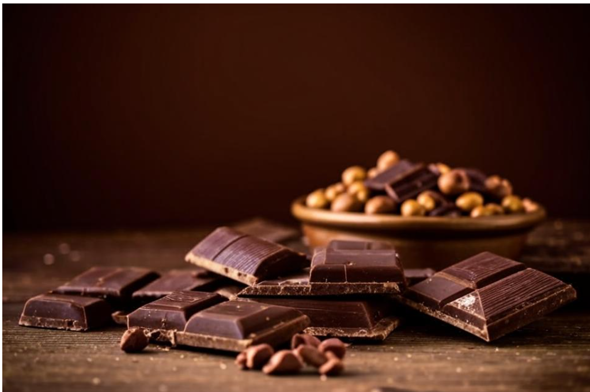

Интересные факты
Некоторые факты о шоколаде способны вас удивить!

- Изобретение шоколадной плитки: Первая шоколадная плитка была произведена в 1847 году британской компанией Fry & Sons. Это дало старт современной шоколадной индустрии.
- Какао как валюта: В древних цивилизациях Мезоамерики, таких как ацтеки, какао-бобы использовались как валюта. Можно было купить за них товары и услуги, что подчеркивает ценность какао.
- Шоколад и здоровье: Темный шоколад, содержащий выше 70% какао, считается полезным для сердца благодаря высокому содержанию антиоксидантов. Исследования указывают на его потенциал в снижении артериального давления и улучшении кровообращения.
- Шоколадные реки: В самом сердце фабрики Willy Wonka в "Чарли и шоколадной фабрике" нет ничего, кроме шоколадных рек. Хоть это и фантастика, существует настоящее место — в Венесуэле, где течет река с высоким содержанием какао.
- Какао-бобы и аромат: Удивительно, но какао-бобы имеют около 600 различных ароматических соединений, что позволяет создавать разнообразные вкусы и ароматы шоколада.
- Шоколад и мозг: Шоколад содержит фенилэтиламин, химическое соединение, которое вызывает чувство радости и счастья. Потребление шоколада может активировать систему "награды" мозга.
- Шоколад в космосе: Астронавты даже брали шоколад с собой на космические миссии, поскольку он является отличным источником энергии и многообещающим продуктом для улучшения настроения.
- Традиция на праздники: В большинстве стран шоколад стал традиционным подарком на праздники, такие как День Святого Валентина, Пасха и Хэллоуин. Например, в России на Новый год популярны шоколадные конфеты в качестве лакомства.
- Чувствительность к шоколаду: У некоторых людей может возникнуть аллергическая реакция на шоколад, чаще всего на ингредиенты, а не на само какао. Это может быть связано с молоком, орехами или другими добавками.
- Шоколадный рай: У Экуадора и Ганы есть репутация как у стран с лучшими сортами какао, что делает эти регионы центрами для производства шоколада. Эти факты подчеркивают важность шоколада как не только вкусного лакомства, но и культурного, экономического и даже научного явления!
